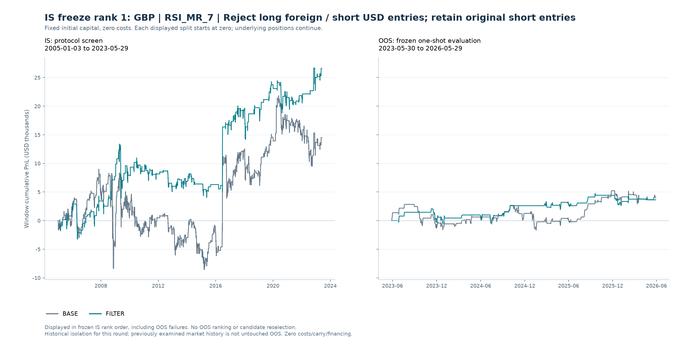

先筛选，再冻结，再评估
当前状态：已按冻结集合完成 OOS 一次评估；本轮 1 个冻结候选中，0 个满足预写 OOS 曲线标准。另有 0 个通过交易质量确认，同时满足两者的为 0 个。本轮目标尚未达成；交易质量单项确认不能替代曲线标准。
预写协议 SHA-256：d8ae5377405da2f84bd47c671d00855e1f797ad2122cc45509f03cb117369428
冻结集合 SHA-256：9d08c5f75be3e7287332273b2fb65454293a1633bff764e1d4f01aca88672802
freeze_rank 排序。OOS 收益、胜率、回撤或最终成败均不参与候选选择、图册顺序或展示取舍。报告不把历史隔离声称为全新的未触碰样本外证据。IS 综合门槛（需同时满足）
- IS 简单年化至少 1%
- IS 累计收益比 BASE 至少改善 5 pp
- IS 交易胜率至少改善 2 pp
- IS 盈亏比至少相对提高 10%
- IS 最大回撤恶化不超过 2 pp
- IS 至少 50 笔合格已平仓交易
- IS 合格已平仓交易保留比例至少 50%
- IS 三个预设分段中至少 2 段正收益
- IS 三个预设分段中至少 2 段优于 BASE
- 最后一个 IS 分段必须同时正收益且优于 BASE
- IS 收益 / 回撤比必须优于 BASE：累计单利收益除以最大回撤的绝对值；零回撤边界按预写筛选实现处理
冻结后评价 OOS 的预写曲线标准
- OOS 简单年化至少 1%
- OOS 累计收益比 BASE 至少改善 0 pp
- OOS 最大回撤不低于 -15 pp
- 三个 OOS 周年区间中至少 2 段正收益
- OOS 至少 10 笔合格已平仓交易
交易质量另行确认：OOS 的胜率和盈亏比均不劣于 BASE，且至少有 20 笔合格已平仓交易。该确认不授权根据 OOS 修改阈值或重选候选。
IS 预写综合标准原记录
| min_gross_annualized_simple_pct | 1.00 |
|---|---|
| min_return_improvement_pp | 5.00 |
| min_win_rate_improvement_pp | 2.00 |
| min_payoff_relative_improvement | 0.10 |
| max_drawdown_deterioration_pp | 2.00 |
| return_to_drawdown_must_improve | 是 |
| min_closed_trades | 50 |
| min_closed_retention | 0.50 |
| min_positive_is_blocks | 2 |
| min_improved_is_blocks | 2 |
| last_is_block_positive_and_improved | 是 |
| one_way_cost_bp | 0.00 |
| cost_sensitivity_evaluated | 否 |
| cost_instruction | User explicitly requested no costs for this round. |
| rank | ["gross_return_improvement_pp DESC", "payoff_absolute_improvement DESC", "win_rate_improvement_pp DESC", "candidate_id ASC"] |
| freeze | One highest IS-ranked passing NEW filter per pair/strategy. All passing versions retained in IS table. |
| schedule_delay_is_diagnostic_only | 是 |
OOS 预写评价标准原记录（不用于重选）
| min_net_annualized_simple_pct | 1.00 |
|---|---|
| min_net_return_improvement_pp | 0.00 |
| worst_net_drawdown_pp | -15.00 |
| min_positive_anniversary_years | 2 |
| min_closed_trades | 10 |
| quality_confirmation | Separately report whether both gross trade win rate and payoff are no worse than BASE, with >=20 closed trades. Not a license to tune on OOS. |
比较口径：固定本金单利，零成本
每个独立账户使用固定初始本金 $100,000。日 PnL 为固定本金乘实际持仓方向及现货日收益，逐日相加。本轮不计交易成本、carry、融资或现金利息。简单年化为区间单利收益除以实际日历年数，不是 CAGR。
IS 与 OOS 图形分别重置累计 PnL 为零；这只是显示归零，不能解释为在分界日清仓或重新训练。跨界持仓在 OOS 内发生的日收益仍进入 OOS 账户表现。最大回撤以初始本金百分点表示。交易胜率、盈亏比与已平仓数仅覆盖区间内开仓且在区间末前真实平仓、至少获得一个收益观测的交易；跨界持仓和期末未平仓交易另列。保留比例为 FILTER 合格已平仓数除以同区间 BASE 数量。
少于 20 笔合格已平仓交易标为低样本；OOS 曲线标准与额外交易质量确认分别列示。未定义统计显示“—”，不代表零。全部数值与冻结标准均来自计算模块，报告不重选阈值或补造 OOS。
完整冻结清单：固定 IS 顺序
IS 共评估 97 个规则 / 币种 / filter 组合；综合通过 1 个。 每个币种 / 技术规则最多冻结一个 IS 排名最高的新增达标 filter。其他通过版本和未通过版本保留在完整 IS 表，不凭 OOS 替换冻结者。
| IS 冻结顺序 | 冻结候选 | 币种 | 技术规则 | 过滤条件 |
|---|---|---|---|---|
| 1.00 | GBP|RSI_MR_7|REJECT_LONG | GBP | RSI_MR_7 | Reject long foreign / short USD entries; retain original short entries |
全部冻结候选的 IS / OOS 结果
以下保持原 IS 冻结顺序，包含 OOS 未通过者；不按 OOS 盈亏排序。
| IS 冻结顺序 | 币种 | 技术规则 | 过滤条件 | IS FILTER 累计 % | OOS FILTER 累计 % | OOS BASE 累计 % | 预写OOS曲线标准 | OOS交易质量确认 |
|---|---|---|---|---|---|---|---|---|
| 1.00 | GBP | RSI_MR_7 | Reject long foreign / short USD entries; retain original short entries | 26.61 | 3.63 | 4.05 | 否 | 否 |
完整 IS 筛选记录：含未通过与通过但未冻结版本
| 冻结候选 | 币种 | 技术规则 | 过滤条件 | 新增过滤版本 | IS 综合通过 | 已冻结 | IS 冻结顺序 | IS单利累计 % | IS收益改善 pp | IS胜率改善 pp | IS盈亏比相对改善 % | IS已平仓数 | 已平仓交易保留比例 % | IS未通过项目 |
|---|---|---|---|---|---|---|---|---|---|---|---|---|---|---|
| CHF|MA_10_30|REJECT_SHORT | CHF | MA_10_30 | Reject short foreign / long USD entries; retain original long entries | 是 | 否 | 否 | — | -20.77 | 55.43 | 2.77 | 9.61 | 102 | 50.25 | positive_and_annualized_pass|payoff_pass|block_positive_pass |
| CHF|MA_20_60|REJECT_SHORT | CHF | MA_20_60 | Reject short foreign / long USD entries; retain original long entries | 是 | 否 | 否 | — | -14.05 | 48.70 | 4.63 | 10.15 | 54 | 50.00 | positive_and_annualized_pass |
| NOK|DONCHIAN_BO_10|REJECT_LONG | NOK | DONCHIAN_BO_10 | Reject long foreign / short USD entries; retain original short entries | 是 | 否 | 否 | — | -23.22 | 47.91 | -0.74 | 12.20 | 220 | 50.69 | positive_and_annualized_pass|win_rate_pass|block_positive_pass |
| AUD|BB_BO_10|REJECT_SHORT | AUD | BB_BO_10 | Reject short foreign / long USD entries; retain original long entries | 是 | 否 | 否 | — | -34.62 | 45.81 | -3.43 | 26.36 | 92 | 46.70 | positive_and_annualized_pass|win_rate_pass|sample_pass|block_positive_pass |
| GBP|RSI_MOM_7|REJECT_LONG | GBP | RSI_MOM_7 | Reject long foreign / short USD entries; retain original short entries | 是 | 否 | 否 | — | -1.12 | 43.11 | -0.78 | 21.74 | 345 | 49.36 | positive_and_annualized_pass|win_rate_pass|sample_pass|block_positive_pass |
| NOK|VOTE_STRENGTH_4|REJECT_LONG | NOK | VOTE_STRENGTH_4 | Reject long foreign / short USD entries; retain original short entries | 是 | 否 | 否 | — | 6.14 | 38.90 | 2.54 | 7.02 | 130 | 50.78 | positive_and_annualized_pass|payoff_pass |
| SEK|BB_BO_10|REJECT_LONG | SEK | BB_BO_10 | Reject long foreign / short USD entries; retain original short entries | 是 | 否 | 否 | — | -6.94 | 36.39 | -0.46 | 25.22 | 96 | 48.00 | positive_and_annualized_pass|win_rate_pass|sample_pass|block_positive_pass |
| JPY|RSI_MOM_14|REJECT_LONG | JPY | RSI_MOM_14 | Reject long foreign / short USD entries; retain original short entries | 是 | 否 | 否 | — | 31.29 | 36.14 | 0.57 | 37.69 | 191 | 48.11 | win_rate_pass|sample_pass |
| NOK|MACD_12_26_9|REJECT_LONG | NOK | MACD_12_26_9 | Reject long foreign / short USD entries; retain original short entries | 是 | 否 | 否 | — | 8.77 | 35.86 | 1.61 | 5.50 | 198 | 49.87 | positive_and_annualized_pass|win_rate_pass|payoff_pass|sample_pass|block_positive_pass |
| NOK|BB_BO_10|REJECT_LONG | NOK | BB_BO_10 | Reject long foreign / short USD entries; retain original short entries | 是 | 否 | 否 | — | -0.05 | 35.59 | 0.04 | 25.34 | 111 | 54.95 | positive_and_annualized_pass|win_rate_pass |
| NOK|VOTE_EQUAL_4|REJECT_LONG | NOK | VOTE_EQUAL_4 | Reject long foreign / short USD entries; retain original short entries | 是 | 否 | 否 | — | -5.39 | 34.93 | 1.79 | 3.97 | 152 | 51.70 | positive_and_annualized_pass|win_rate_pass|payoff_pass|block_positive_pass|block_improvement_pass |
| GBP|VOTE_STRENGTH_4|REJECT_LONG | GBP | VOTE_STRENGTH_4 | Reject long foreign / short USD entries; retain original short entries | 是 | 否 | 否 | — | -7.93 | 34.04 | -3.42 | 37.90 | 139 | 49.12 | positive_and_annualized_pass|win_rate_pass|sample_pass|block_positive_pass |
| GBP|RSI_MOM_20|REJECT_LONG | GBP | RSI_MOM_20 | Reject long foreign / short USD entries; retain original short entries | 是 | 否 | 否 | — | 15.12 | 32.42 | 2.82 | 28.06 | 151 | 50.67 | positive_and_annualized_pass|block_positive_pass |
| JPY|BB_BO_10|REJECT_LONG | JPY | BB_BO_10 | Reject long foreign / short USD entries; retain original short entries | 是 | 否 | 否 | — | 13.98 | 32.07 | 6.20 | 12.41 | 86 | 40.95 | positive_and_annualized_pass|sample_pass |
| NZD|MA_10_30|REJECT_LONG | NZD | MA_10_30 | Reject long foreign / short USD entries; retain original short entries | 是 | 否 | 否 | — | -30.25 | 31.80 | -2.94 | 15.19 | 96 | 49.74 | positive_and_annualized_pass|win_rate_pass|sample_pass|block_positive_pass |
| GBP|RSI_MOM_14|REJECT_LONG | GBP | RSI_MOM_14 | Reject long foreign / short USD entries; retain original short entries | 是 | 否 | 否 | — | 10.01 | 30.31 | 2.69 | 12.93 | 201 | 48.79 | positive_and_annualized_pass|sample_pass|block_positive_pass |
| NZD|MA_10_30|REJECT_SHORT | NZD | MA_10_30 | Reject short foreign / long USD entries; retain original long entries | 是 | 否 | 否 | — | -31.80 | 30.25 | 2.91 | -12.73 | 97 | 50.26 | positive_and_annualized_pass|payoff_pass|return_to_drawdown_pass|block_positive_pass|block_improvement_pass |
| EUR|BB_MR_10|REJECT_LONG | EUR | BB_MR_10 | Reject long foreign / short USD entries; retain original short entries | 是 | 否 | 否 | — | 28.51 | 29.26 | 5.77 | 20.58 | 110 | 54.19 | block_positive_pass |
| NOK|DONCHIAN_BO_20|REJECT_LONG | NOK | DONCHIAN_BO_20 | Reject long foreign / short USD entries; retain original short entries | 是 | 否 | 否 | — | -5.54 | 29.19 | 0.14 | 10.48 | 121 | 53.54 | positive_and_annualized_pass|win_rate_pass|block_positive_pass|block_improvement_pass |
| GBP|VOTE_EQUAL_4|REJECT_SHORT | GBP | VOTE_EQUAL_4 | Reject short foreign / long USD entries; retain original long entries | 是 | 否 | 否 | — | -24.14 | 29.09 | 4.55 | -17.08 | 146 | 50.87 | positive_and_annualized_pass|payoff_pass|block_positive_pass |
| GBP|TSMOM_21|REJECT_LONG | GBP | TSMOM_21 | Reject long foreign / short USD entries; retain original short entries | 是 | 否 | 否 | — | 6.70 | 28.71 | 1.48 | 8.51 | 237 | 50.00 | positive_and_annualized_pass|win_rate_pass|payoff_pass|block_positive_pass |
| GBP|MA_20_60|REJECT_LONG | GBP | MA_20_60 | Reject long foreign / short USD entries; retain original short entries | 是 | 否 | 否 | — | 6.18 | 28.56 | 0.00 | 29.07 | 48 | 50.00 | positive_and_annualized_pass|win_rate_pass|sample_pass |
| EUR|BB_BO_10|REJECT_LONG | EUR | BB_BO_10 | Reject long foreign / short USD entries; retain original short entries | 是 | 否 | 否 | — | 29.26 | 28.51 | 6.83 | 14.59 | 93 | 45.81 | sample_pass|block_improvement_pass |
| CHF|BB_BO_20|REJECT_LONG | CHF | BB_BO_20 | Reject long foreign / short USD entries; retain original short entries | 是 | 否 | 否 | — | -19.75 | 28.49 | -1.00 | 8.07 | 72 | 42.35 | positive_and_annualized_pass|win_rate_pass|payoff_pass|sample_pass|block_positive_pass |
| GBP|DONCHIAN_BO_20|REJECT_SHORT | GBP | DONCHIAN_BO_20 | Reject short foreign / long USD entries; retain original long entries | 是 | 否 | 否 | — | -20.77 | 28.24 | 5.99 | -20.57 | 117 | 49.37 | positive_and_annualized_pass|payoff_pass|sample_pass|block_positive_pass |
| NOK|BB_MR_20|REJECT_LONG | NOK | BB_MR_20 | Reject long foreign / short USD entries; retain original short entries | 是 | 否 | 否 | — | 1.83 | 26.52 | 1.27 | 11.54 | 75 | 47.47 | positive_and_annualized_pass|win_rate_pass|sample_pass|block_positive_pass |
| NOK|RSI_MOM_14|REJECT_LONG | NOK | RSI_MOM_14 | Reject long foreign / short USD entries; retain original short entries | 是 | 否 | 否 | — | 17.25 | 26.39 | 0.93 | 17.45 | 215 | 51.93 | positive_and_annualized_pass|win_rate_pass |
| SEK|DONCHIAN_BO_10|REJECT_LONG | SEK | DONCHIAN_BO_10 | Reject long foreign / short USD entries; retain original short entries | 是 | 否 | 否 | — | 5.06 | 26.14 | 1.99 | 1.26 | 206 | 49.64 | positive_and_annualized_pass|win_rate_pass|payoff_pass|sample_pass |
| JPY|RSI_MOM_20|REJECT_LONG | JPY | RSI_MOM_20 | Reject long foreign / short USD entries; retain original short entries | 是 | 否 | 否 | — | 28.76 | 25.23 | -1.65 | 56.42 | 133 | 48.36 | win_rate_pass|sample_pass |
| SEK|VOTE_STRENGTH_4|REJECT_LONG | SEK | VOTE_STRENGTH_4 | Reject long foreign / short USD entries; retain original short entries | 是 | 否 | 否 | — | -0.89 | 24.04 | -3.88 | 30.56 | 130 | 47.10 | positive_and_annualized_pass|win_rate_pass|sample_pass|block_improvement_pass |
| JPY|RSI_MR_7|REJECT_LONG | JPY | RSI_MR_7 | Reject long foreign / short USD entries; retain original short entries | 是 | 否 | 否 | — | 16.52 | 23.60 | 2.80 | 27.14 | 118 | 54.13 | positive_and_annualized_pass |
| SEK|RSI_MOM_7|REJECT_LONG | SEK | RSI_MOM_7 | Reject long foreign / short USD entries; retain original short entries | 是 | 否 | 否 | — | 26.74 | 23.42 | 1.76 | 7.53 | 367 | 51.69 | win_rate_pass|payoff_pass |
| NOK|DONCHIAN_BO_10|REJECT_SHORT | NOK | DONCHIAN_BO_10 | Reject short foreign / long USD entries; retain original long entries | 是 | 否 | 否 | — | -47.91 | 23.22 | 0.76 | -11.85 | 214 | 49.31 | positive_and_annualized_pass|win_rate_pass|payoff_pass|return_to_drawdown_pass|sample_pass|block_positive_pass|block_improvement_pass |
| NOK|RSI_MOM_20|REJECT_LONG | NOK | RSI_MOM_20 | Reject long foreign / short USD entries; retain original short entries | 是 | 否 | 否 | — | 10.85 | 23.06 | -1.64 | 32.17 | 155 | 53.45 | positive_and_annualized_pass|win_rate_pass|block_improvement_pass |
| SEK|BB_BO_20|REJECT_LONG | SEK | BB_BO_20 | Reject long foreign / short USD entries; retain original short entries | 是 | 否 | 否 | — | -7.38 | 22.82 | 1.19 | 3.83 | 82 | 51.90 | positive_and_annualized_pass|win_rate_pass|payoff_pass|block_positive_pass|block_improvement_pass |
| NOK|RSI_MOM_7|REJECT_SHORT | NOK | RSI_MOM_7 | Reject short foreign / long USD entries; retain original long entries | 是 | 否 | 否 | — | -16.37 | 22.72 | 4.40 | -14.69 | 336 | 48.55 | positive_and_annualized_pass|payoff_pass|sample_pass|block_positive_pass|block_improvement_pass |
| GBP|MA_10_30|REJECT_LONG | GBP | MA_10_30 | Reject long foreign / short USD entries; retain original short entries | 是 | 否 | 否 | — | 13.22 | 21.52 | -1.93 | 31.18 | 94 | 49.74 | positive_and_annualized_pass|win_rate_pass|sample_pass |
| CHF|MA_10_30|REJECT_LONG | CHF | MA_10_30 | Reject long foreign / short USD entries; retain original short entries | 是 | 否 | 否 | — | -55.43 | 20.77 | -2.80 | -11.69 | 101 | 49.75 | positive_and_annualized_pass|win_rate_pass|payoff_pass|return_to_drawdown_pass|sample_pass|block_positive_pass|block_improvement_pass |
| CAD|RSI_MOM_7|REJECT_LONG | CAD | RSI_MOM_7 | Reject long foreign / short USD entries; retain original short entries | 是 | 否 | 否 | — | -9.16 | 20.30 | 0.71 | 2.18 | 361 | 51.28 | positive_and_annualized_pass|win_rate_pass|payoff_pass|block_positive_pass |
| AUD|RSI_MOM_14|REJECT_LONG | AUD | RSI_MOM_14 | Reject long foreign / short USD entries; retain original short entries | 是 | 否 | 否 | — | 14.42 | 20.02 | -1.08 | 23.17 | 210 | 48.28 | positive_and_annualized_pass|win_rate_pass|sample_pass |
| NZD|BB_MR_10|REJECT_LONG | NZD | BB_MR_10 | Reject long foreign / short USD entries; retain original short entries | 是 | 否 | 否 | — | 13.67 | 19.67 | 4.28 | 7.36 | 84 | 47.46 | positive_and_annualized_pass|payoff_pass|sample_pass |
| EUR|BB_BO_20|REJECT_LONG | EUR | BB_BO_20 | Reject long foreign / short USD entries; retain original short entries | 是 | 否 | 否 | — | 14.82 | 19.11 | 4.75 | 7.77 | 77 | 47.24 | positive_and_annualized_pass|payoff_pass|sample_pass|block_positive_pass |
| CAD|DONCHIAN_BO_20|REJECT_SHORT | CAD | DONCHIAN_BO_20 | Reject short foreign / long USD entries; retain original long entries | 是 | 否 | 否 | — | -3.47 | 19.08 | 2.29 | 0.26 | 106 | 47.96 | positive_and_annualized_pass|payoff_pass|sample_pass|block_improvement_pass |
| CAD|BB_BO_10|REJECT_SHORT | CAD | BB_BO_10 | Reject short foreign / long USD entries; retain original long entries | 是 | 否 | 否 | — | -8.11 | 17.98 | 4.95 | -10.16 | 90 | 48.65 | positive_and_annualized_pass|payoff_pass|sample_pass|block_positive_pass |
| AUD|MACD_12_26_9|REJECT_LONG | AUD | MACD_12_26_9 | Reject long foreign / short USD entries; retain original short entries | 是 | 否 | 否 | — | -15.24 | 17.66 | -0.44 | 1.76 | 184 | 49.86 | positive_and_annualized_pass|win_rate_pass|payoff_pass|sample_pass|block_improvement_pass |
| SEK|VOTE_EQUAL_4|REJECT_LONG | SEK | VOTE_EQUAL_4 | Reject long foreign / short USD entries; retain original short entries | 是 | 否 | 否 | — | 12.23 | 17.34 | 0.72 | 7.99 | 140 | 52.24 | positive_and_annualized_pass|win_rate_pass|payoff_pass |
| NOK|RSI_MOM_7|REJECT_LONG | NOK | RSI_MOM_7 | Reject long foreign / short USD entries; retain original short entries | 是 | 否 | 否 | — | -22.72 | 16.37 | -4.16 | 16.77 | 356 | 51.45 | positive_and_annualized_pass|win_rate_pass|block_positive_pass |
| EUR|RSI_MOM_20|REJECT_LONG | EUR | RSI_MOM_20 | Reject long foreign / short USD entries; retain original short entries | 是 | 否 | 否 | — | 15.37 | 15.97 | 3.45 | 12.16 | 137 | 49.82 | positive_and_annualized_pass|sample_pass|block_positive_pass|block_improvement_pass |
| NZD|RSI_MOM_14|REJECT_LONG | NZD | RSI_MOM_14 | Reject long foreign / short USD entries; retain original short entries | 是 | 否 | 否 | — | 34.72 | 15.80 | -0.18 | 28.20 | 197 | 49.37 | win_rate_pass|sample_pass|block_improvement_pass |
| NZD|RSI_MOM_20|REJECT_LONG | NZD | RSI_MOM_20 | Reject long foreign / short USD entries; retain original short entries | 是 | 否 | 否 | — | 26.16 | 15.41 | 4.05 | 10.63 | 136 | 48.75 | sample_pass |
| AUD|MACD_12_26_9|REJECT_SHORT | AUD | MACD_12_26_9 | Reject short foreign / long USD entries; retain original long entries | 是 | 否 | 否 | — | -17.66 | 15.24 | 0.44 | -1.72 | 185 | 50.14 | positive_and_annualized_pass|win_rate_pass|payoff_pass|block_positive_pass|block_improvement_pass |
| EUR|BB_MR_20|REJECT_LONG | EUR | BB_MR_20 | Reject long foreign / short USD entries; retain original short entries | 是 | 否 | 否 | — | 19.11 | 14.82 | 4.25 | 9.76 | 86 | 52.76 | payoff_pass|block_improvement_pass |
| SEK|RSI_MOM_20|REJECT_LONG | SEK | RSI_MOM_20 | Reject long foreign / short USD entries; retain original short entries | 是 | 否 | 否 | — | -10.06 | 13.31 | -4.39 | 22.41 | 152 | 51.35 | positive_and_annualized_pass|win_rate_pass|block_positive_pass|block_improvement_pass |
| AUD|BB_BO_20|REJECT_LONG | AUD | BB_BO_20 | Reject long foreign / short USD entries; retain original short entries | 是 | 否 | 否 | — | 0.53 | 13.17 | -2.91 | 26.21 | 86 | 50.00 | positive_and_annualized_pass|win_rate_pass|block_improvement_pass |
| SEK|RSI_MOM_14|REJECT_LONG | SEK | RSI_MOM_14 | Reject long foreign / short USD entries; retain original short entries | 是 | 否 | 否 | — | 1.42 | 12.16 | -1.23 | 11.41 | 213 | 53.12 | positive_and_annualized_pass|win_rate_pass|block_positive_pass|block_improvement_pass |
| GBP|RSI_MR_7|REJECT_LONG | GBP | RSI_MR_7 | Reject long foreign / short USD entries; retain original short entries | 是 | 是 | 是 | 1.00 | 26.61 | 12.09 | 3.47 | 25.82 | 115 | 51.80 | — |
| CAD|MACD_12_26_9|REJECT_LONG | CAD | MACD_12_26_9 | Reject long foreign / short USD entries; retain original short entries | 是 | 否 | 否 | — | -5.96 | 10.06 | -2.23 | 11.95 | 193 | 49.87 | positive_and_annualized_pass|win_rate_pass|sample_pass|block_improvement_pass |
| SEK|MACD_12_26_9|REJECT_LONG | SEK | MACD_12_26_9 | Reject long foreign / short USD entries; retain original short entries | 是 | 否 | 否 | — | 24.45 | 9.92 | 0.51 | 7.23 | 198 | 50.00 | win_rate_pass|payoff_pass|block_improvement_pass |
| CAD|VOTE_EQUAL_4|REJECT_SHORT | CAD | VOTE_EQUAL_4 | Reject short foreign / long USD entries; retain original long entries | 是 | 否 | 否 | — | -7.68 | 9.75 | -0.41 | 2.44 | 138 | 47.75 | positive_and_annualized_pass|win_rate_pass|payoff_pass|sample_pass|block_improvement_pass |
| AUD|TSMOM_63|REJECT_SHORT | AUD | TSMOM_63 | Reject short foreign / long USD entries; retain original long entries | 是 | 否 | 否 | — | -12.97 | 9.61 | 1.13 | -5.21 | 159 | 50.16 | positive_and_annualized_pass|win_rate_pass|payoff_pass|block_positive_pass|block_improvement_pass |
| CAD|RSI_MOM_7|REJECT_SHORT | CAD | RSI_MOM_7 | Reject short foreign / long USD entries; retain original long entries | 是 | 否 | 否 | — | -20.30 | 9.16 | -0.75 | -2.26 | 343 | 48.72 | positive_and_annualized_pass|win_rate_pass|payoff_pass|sample_pass|block_positive_pass|block_improvement_pass |
| EUR|RSI_MR_7|REJECT_LONG | EUR | RSI_MR_7 | Reject long foreign / short USD entries; retain original short entries | 是 | 否 | 否 | — | 18.35 | 9.05 | 2.67 | 12.57 | 106 | 49.77 | positive_and_annualized_pass|sample_pass|block_positive_pass|block_improvement_pass |
| CAD|BB_BO_10|REJECT_LONG | CAD | BB_BO_10 | Reject long foreign / short USD entries; retain original short entries | 是 | 否 | 否 | — | -17.98 | 8.11 | -4.69 | 11.05 | 95 | 51.35 | positive_and_annualized_pass|win_rate_pass|block_positive_pass |
| GBP|VOTE_STRENGTH_4|REJECT_SHORT | GBP | VOTE_STRENGTH_4 | Reject short foreign / long USD entries; retain original long entries | 是 | 否 | 否 | — | -34.04 | 7.93 | 3.30 | -29.13 | 144 | 50.88 | positive_and_annualized_pass|payoff_pass|return_to_drawdown_pass|block_positive_pass |
| CAD|VOTE_STRENGTH_4|REJECT_SHORT | CAD | VOTE_STRENGTH_4 | Reject short foreign / long USD entries; retain original long entries | 是 | 否 | 否 | — | -21.48 | 6.84 | -1.01 | -5.10 | 132 | 49.81 | positive_and_annualized_pass|win_rate_pass|payoff_pass|return_to_drawdown_pass|sample_pass|block_positive_pass |
| AUD|RSI_MR_7|REJECT_SHORT | AUD | RSI_MR_7 | Reject short foreign / long USD entries; retain original long entries | 是 | 否 | 否 | — | 15.83 | 6.74 | 2.52 | 8.14 | 107 | 47.77 | positive_and_annualized_pass|payoff_pass|sample_pass|block_positive_pass |
| CAD|TSMOM_21|REJECT_SHORT | CAD | TSMOM_21 | Reject short foreign / long USD entries; retain original long entries | 是 | 否 | 否 | — | -7.33 | 6.31 | 1.13 | -4.82 | 248 | 50.10 | positive_and_annualized_pass|win_rate_pass|payoff_pass|block_positive_pass|block_improvement_pass |
| CAD|BB_BO_20|REJECT_LONG | CAD | BB_BO_20 | Reject long foreign / short USD entries; retain original short entries | 是 | 否 | 否 | — | 1.16 | 6.18 | 4.52 | -11.62 | 80 | 51.61 | positive_and_annualized_pass|payoff_pass|block_improvement_pass |
| CAD|MACD_12_26_9|REJECT_SHORT | CAD | MACD_12_26_9 | Reject short foreign / long USD entries; retain original long entries | 是 | 否 | 否 | — | -10.06 | 5.96 | 2.22 | -10.62 | 194 | 50.13 | positive_and_annualized_pass|payoff_pass|block_improvement_pass |
| NOK|DONCHIAN_BO_20|REJECT_SHORT | NOK | DONCHIAN_BO_20 | Reject short foreign / long USD entries; retain original long entries | 是 | 否 | 否 | — | -29.19 | 5.54 | -0.16 | -11.36 | 105 | 46.46 | positive_and_annualized_pass|win_rate_pass|payoff_pass|return_to_drawdown_pass|sample_pass|block_positive_pass|block_improvement_pass |
| NOK|VOTE_EQUAL_4|REJECT_SHORT | NOK | VOTE_EQUAL_4 | Reject short foreign / long USD entries; retain original long entries | 是 | 否 | 否 | — | -34.93 | 5.39 | -1.91 | -4.89 | 142 | 48.30 | positive_and_annualized_pass|win_rate_pass|payoff_pass|return_to_drawdown_pass|sample_pass|block_positive_pass|block_improvement_pass |
| CAD|DONCHIAN_BO_10|REJECT_SHORT | CAD | DONCHIAN_BO_10 | Reject short foreign / long USD entries; retain original long entries | 是 | 否 | 否 | — | -20.94 | 5.11 | 0.93 | -11.12 | 214 | 50.00 | positive_and_annualized_pass|win_rate_pass|payoff_pass|return_to_drawdown_pass|block_positive_pass|block_improvement_pass |
| AUD|MA_20_60|REJECT_SHORT | AUD | MA_20_60 | Reject short foreign / long USD entries; retain original long entries | 是 | 否 | 否 | — | -6.50 | 4.07 | -0.31 | 2.05 | 51 | 50.50 | positive_and_annualized_pass|return_improvement_pass|win_rate_pass|payoff_pass|block_positive_pass|block_improvement_pass |
| GBP|BB_MR_10|REJECT_LONG | GBP | BB_MR_10 | Reject long foreign / short USD entries; retain original short entries | 是 | 否 | 否 | — | 20.36 | 3.60 | 3.60 | 12.82 | 101 | 49.03 | return_improvement_pass|sample_pass|block_improvement_pass |
| NOK|BB_BO_20|REJECT_LONG | NOK | BB_BO_20 | Reject long foreign / short USD entries; retain original short entries | 是 | 否 | 否 | — | 26.52 | 1.83 | 1.15 | 10.84 | 83 | 52.53 | return_improvement_pass|win_rate_pass|block_improvement_pass |
| AUD|BB_MR_20|REJECT_LONG | AUD | BB_MR_20 | Reject long foreign / short USD entries; retain original short entries | 是 | 否 | 否 | — | 13.17 | 0.53 | -2.91 | 27.65 | 86 | 50.00 | positive_and_annualized_pass|return_improvement_pass|win_rate_pass|block_positive_pass |
| CAD|MA_10_30|REJECT_SHORT | CAD | MA_10_30 | Reject short foreign / long USD entries; retain original long entries | 是 | 否 | 否 | — | -4.22 | 0.12 | 1.56 | -9.19 | 96 | 50.00 | positive_and_annualized_pass|return_improvement_pass|win_rate_pass|payoff_pass|return_to_drawdown_pass|block_positive_pass|block_improvement_pass |
| CAD|BB_BO_20|REJECT_SHORT | CAD | BB_BO_20 | Reject short foreign / long USD entries; retain original long entries | 是 | 否 | 否 | — | -6.18 | -1.16 | -4.82 | 16.27 | 75 | 48.39 | positive_and_annualized_pass|return_improvement_pass|win_rate_pass|return_to_drawdown_pass|sample_pass|block_improvement_pass |
| NZD|DONCHIAN_BO_20|REJECT_SHORT | NZD | DONCHIAN_BO_20 | Reject short foreign / long USD entries; retain original long entries | 是 | 否 | 否 | — | -18.90 | -2.41 | -0.32 | -7.87 | 119 | 52.65 | positive_and_annualized_pass|return_improvement_pass|win_rate_pass|payoff_pass|return_to_drawdown_pass|block_positive_pass|block_improvement_pass |
| CAD|RSI_MOM_20|REJECT_SHORT | CAD | RSI_MOM_20 | Reject short foreign / long USD entries; retain original long entries | 是 | 否 | 否 | — | -5.15 | -3.08 | -0.10 | -7.18 | 140 | 49.30 | positive_and_annualized_pass|return_improvement_pass|win_rate_pass|payoff_pass|return_to_drawdown_pass|sample_pass|block_positive_pass |
| NZD|MACD_12_26_9|REJECT_SHORT | NZD | MACD_12_26_9 | Reject short foreign / long USD entries; retain original long entries | 是 | 否 | 否 | — | 3.41 | -4.96 | -2.32 | 10.51 | 194 | 50.00 | positive_and_annualized_pass|return_improvement_pass|win_rate_pass|return_to_drawdown_pass|block_improvement_pass |
| SEK|DONCHIAN_BO_10|REJECT_SHORT | SEK | DONCHIAN_BO_10 | Reject short foreign / long USD entries; retain original long entries | 是 | 否 | 否 | — | -26.14 | -5.06 | -1.96 | -1.17 | 209 | 50.36 | positive_and_annualized_pass|return_improvement_pass|win_rate_pass|payoff_pass|return_to_drawdown_pass|block_positive_pass|block_improvement_pass |
| NOK|VOTE_STRENGTH_4|REJECT_SHORT | NOK | VOTE_STRENGTH_4 | Reject short foreign / long USD entries; retain original long entries | 是 | 否 | 否 | — | -38.90 | -6.14 | -2.62 | -8.81 | 126 | 49.22 | positive_and_annualized_pass|return_improvement_pass|win_rate_pass|payoff_pass|return_to_drawdown_pass|sample_pass|block_positive_pass|block_improvement_pass |
| AUD|VOTE_EQUAL_4|REJECT_SHORT | AUD | VOTE_EQUAL_4 | Reject short foreign / long USD entries; retain original long entries | 是 | 否 | 否 | — | 19.71 | -6.21 | 1.54 | 0.19 | 144 | 52.17 | return_improvement_pass|win_rate_pass|payoff_pass|return_to_drawdown_pass|block_improvement_pass |
| CHF|BB_MR_10|REJECT_SHORT | CHF | BB_MR_10 | Reject short foreign / long USD entries; retain original long entries | 是 | 否 | 否 | — | 14.86 | -7.56 | -4.60 | 31.36 | 93 | 43.46 | positive_and_annualized_pass|return_improvement_pass|win_rate_pass|sample_pass|block_improvement_pass |
| NOK|REGIME_RULE_FIXED|REJECT_SHORT | NOK | REGIME_RULE_FIXED | Reject short foreign / long USD entries; retain original long entries | 是 | 否 | 否 | — | -0.15 | -7.97 | -0.50 | -8.76 | 54 | 50.47 | positive_and_annualized_pass|return_improvement_pass|win_rate_pass|payoff_pass|return_to_drawdown_pass|block_positive_pass|block_improvement_pass |
| NZD|BB_BO_20|REJECT_SHORT | NZD | BB_BO_20 | Reject short foreign / long USD entries; retain original long entries | 是 | 否 | 否 | — | 3.16 | -8.34 | 2.90 | -14.37 | 85 | 52.47 | positive_and_annualized_pass|return_improvement_pass|payoff_pass|return_to_drawdown_pass|block_improvement_pass |
| NOK|MA_10_30|REJECT_SHORT | NOK | MA_10_30 | Reject short foreign / long USD entries; retain original long entries | 是 | 否 | 否 | — | -35.95 | -8.67 | -0.68 | -11.86 | 100 | 50.25 | positive_and_annualized_pass|return_improvement_pass|win_rate_pass|payoff_pass|return_to_drawdown_pass|block_positive_pass|block_improvement_pass |
| CHF|RSI_MR_7|REJECT_LONG | CHF | RSI_MR_7 | Reject long foreign / short USD entries; retain original short entries | 是 | 否 | 否 | — | 31.95 | -12.89 | 1.98 | 6.08 | 114 | 53.77 | return_improvement_pass|win_rate_pass|payoff_pass|return_to_drawdown_pass|block_improvement_pass |
| GBP|BB_MR_20|REJECT_SHORT | GBP | BB_MR_20 | Reject short foreign / long USD entries; retain original long entries | 是 | 否 | 否 | — | 11.20 | -13.05 | 1.35 | -10.23 | 89 | 51.15 | positive_and_annualized_pass|return_improvement_pass|win_rate_pass|payoff_pass|return_to_drawdown_pass|block_improvement_pass |
| CHF|BB_MR_10|REJECT_LONG | CHF | BB_MR_10 | Reject long foreign / short USD entries; retain original short entries | 是 | 否 | 否 | — | 7.56 | -14.86 | 3.53 | -20.04 | 121 | 56.54 | positive_and_annualized_pass|return_improvement_pass|payoff_pass|return_to_drawdown_pass|block_improvement_pass |
| EUR|MA_20_60|REJECT_SHORT | EUR | MA_20_60 | Reject short foreign / long USD entries; retain original long entries | 是 | 否 | 否 | — | 1.58 | -16.79 | -2.13 | -1.96 | 47 | 50.00 | positive_and_annualized_pass|return_improvement_pass|win_rate_pass|payoff_pass|return_to_drawdown_pass|sample_pass|block_positive_pass|block_improvement_pass |
| NOK|MA_20_60|REJECT_SHORT | NOK | MA_20_60 | Reject short foreign / long USD entries; retain original long entries | 是 | 否 | 否 | — | -26.45 | -18.17 | 0.59 | -25.13 | 54 | 50.47 | positive_and_annualized_pass|return_improvement_pass|win_rate_pass|payoff_pass|return_to_drawdown_pass|block_positive_pass|block_improvement_pass |
| CHF|BB_MR_20|REJECT_LONG | CHF | BB_MR_20 | Reject long foreign / short USD entries; retain original short entries | 是 | 否 | 否 | — | 28.49 | -19.75 | -0.73 | 6.17 | 98 | 57.65 | return_improvement_pass|win_rate_pass|payoff_pass|return_to_drawdown_pass|block_improvement_pass |
| SEK|MACD_12_26_9|REJECT_SHORT | SEK | MACD_12_26_9 | Reject short foreign / long USD entries; retain original long entries | 是 | 否 | 否 | — | -9.92 | -24.45 | -0.51 | -6.75 | 198 | 50.00 | positive_and_annualized_pass|return_improvement_pass|win_rate_pass|payoff_pass|return_to_drawdown_pass|block_improvement_pass |
| SEK|MA_20_60|REJECT_SHORT | SEK | MA_20_60 | Reject short foreign / long USD entries; retain original long entries | 是 | 否 | 否 | — | -5.27 | -29.09 | 0.65 | -23.90 | 46 | 50.55 | positive_and_annualized_pass|return_improvement_pass|win_rate_pass|payoff_pass|return_to_drawdown_pass|sample_pass|block_positive_pass|block_improvement_pass |
| NOK|TSMOM_21|REJECT_SHORT | NOK | TSMOM_21 | Reject short foreign / long USD entries; retain original long entries | 是 | 否 | 否 | — | -13.81 | -30.81 | 1.72 | -17.30 | 250 | 50.10 | positive_and_annualized_pass|return_improvement_pass|win_rate_pass|payoff_pass|return_to_drawdown_pass|block_positive_pass|block_improvement_pass |
边界敏感性：OOS 现金起步
主结果保持跨 IS/OOS 持仓连续。本表另从 OOS 起点空仓开始，仅允许此后新开的原始 BASE 交易段进入，禁止在跨界旧交易段中途入场。边界处理可能显著改变累计收益；现金起步仍有自身回撤，不能以其中较好的数值替换连续持仓结果或修改预写门槛。
全部冻结候选仍按 IS freeze rank 排列；这是已预写的诊断，不用于 OOS 重选。完整记录：oos_fresh_start_metrics.csv。
| IS 冻结顺序 | 币种 | 技术规则 | 连续持仓 FILTER 累计 % | 现金起步 BASE 累计 % | 现金起步 FILTER 累计 % | 现金起步 BASE 回撤 pp | 现金起步 FILTER 回撤 pp |
|---|---|---|---|---|---|---|---|
| 1 | GBP | RSI_MR_7 | 3.63 | 2.67 | 3.63 | -4.52 | -2.67 |
IS FREEZE RANK 1
GBP · RSI_MR_7
Reject long foreign / short USD entries; retain original short entries · 候选编号 GBP|RSI_MR_7|REJECT_LONG

| 区间 | 账户 | 单利累计 % | 简单年化 % | 最大回撤 pp | 交易胜率 % | 交易盈亏比 | 已平仓数 | 已平仓交易保留比例 % | 跨界持仓数 | 期内开仓未平数 | 不足20笔平仓 | 预写OOS曲线标准 | OOS交易质量确认 |
|---|---|---|---|---|---|---|---|---|---|---|---|---|---|
| IS | BASE | 14.52 | 0.79 | -17.55 | 62.61 | 0.68 | 222 | 100.00 | 0 | 1 | 否 | — | — |
| IS | FILTER | 26.61 | 1.45 | -9.46 | 66.09 | 0.85 | 115 | 51.80 | 0 | 0 | 否 | — | — |
| OOS | BASE | 4.05 | 1.35 | -4.52 | 65.79 | 0.66 | 38 | 100.00 | 1 | 0 | 否 | 否 | 否 |
| OOS | FILTER | 3.63 | 1.21 | -2.67 | 65.00 | 1.06 | 20 | 52.63 | 0 | 0 | 否 | 否 | 否 |
冻结候选记录
| candidate_id | GBP|RSI_MR_7|REJECT_LONG |
|---|---|
| pair | GBP |
| strategy | RSI_MR_7 |
| filter_id | REJECT_LONG |
| is_new | 是 |
| gross_return_improvement_pp | 12.09 |
| win_rate_improvement_pp | 3.47 |
| payoff_absolute_improvement | 0.17 |
| payoff_relative_improvement | 0.26 |
| retention | 0.52 |
| is_gross_return_pct | 26.61 |
| is_net_return_pct | 26.61 |
| is_annualized_simple_pct | 1.45 |
| is_win_rate | 0.66 |
| is_payoff_ratio | 0.85 |
| is_closed_n | 115 |
| is_max_drawdown_pp | -9.46 |
| positive_blocks | 3 |
| improved_blocks | 2 |
| positive_and_annualized_pass | 是 |
| return_improvement_pass | 是 |
| win_rate_pass | 是 |
| payoff_pass | 是 |
| drawdown_pass | 是 |
| return_to_drawdown_pass | 是 |
| sample_pass | 是 |
| block_positive_pass | 是 |
| block_improvement_pass | 是 |
| pass | 是 |
| failed_criteria | — |
| freeze_rank | 1.00 |
| frozen | 是 |
| filter_name | Reject long foreign / short USD entries; retain original short entries |
协议、冻结与一次评估证据
以下字段原样来自本轮运行器。哈希和状态用于定位实际记录；报告本身不另行认证缺失的冻结时刻或历史访问隔离。
预写协议
| version | direction_filter_v6 |
|---|---|
| created_utc | 2026-10-23T06:56:11.272778+00:00 |
| is_start | 2005-01-03 |
| is_end | 2023-05-29 |
| oos_start | 2023-05-30 |
| oos_end | 2026-05-29 |
| oos_duration | Three calendar years immediately following IS, ending at the supplied workbook endpoint. |
| scope | {"pairs": ["EUR", "GBP", "AUD", "NZD", "JPY", "CHF", "CAD", "NOK", "SEK"], "strategies": ["RSI_MR_7", "RSI_MR_14", "RSI_MR_20", "RSI_MOM_7", "RSI_MOM_14", "RSI_MOM_20", "MA_10_30", "MA_20_60", "BB_MR_10", "BB_MR_20", "BB_BO_10", "BB_BO_20", "DONCHIAN_BO_10", "DONCHIAN_BO_20", "MACD_12_26_9", "TSMOM_21", "TSMOM_63", "VOTE_EQUAL_4", "VOTE_STRENGTH_4", "REGIME_RULE_FIXED"], "baseline_accounts": 180} |
| initial_capital_usd | 100,000 |
| accounting | fixed_initial_capital_simple |
| cost_bp | 0.00 |
| reference_cost_bp | 0.00 |
| cost_instruction | User explicitly requested no costs. No cost sensitivity is used this round. |
| carry_financing_cash_interest | 0.00 |
| prior_holdout_exposure | The 2023-2026 history was already plotted and inspected in earlier work. This is a development-isolated historical test, not virgin or newly collected OOS. |
| development_access | After workbook parsing, price and native feature rows after IS_END are removed before indicator/return/feature calculations. No full-sample outcome artifact is used as a development input. |
| screen | {"min_gross_annualized_simple_pct": 1.0, "min_return_improvement_pp": 5.0, "min_win_rate_improvement_pp": 2.0, "min_payoff_relative_improvement": 0.1, "max_drawdown_deterioration_pp": 2.0, "return_to_drawdown_must_improve": true, "min_closed_trades": 50, "min_closed_retention": 0.5, "min_positive_is_blocks": 2, "min_improved_is_blocks": 2, "last_is_block_positive_and_improved": true, "one_way_cost_bp": 0.0, "cost_sensitivity_evaluated": false, "cost_instruction": "User explicitly requested no costs for this round.", "rank": ["gross_return_improvement_pp DESC", "payoff_absolute_improvement DESC", "win_rate_improvement_pp DESC", "candidate_id ASC"], "freeze": "One highest IS-ranked passing NEW filter per pair/strategy. All passing versions retained in IS table.", "schedule_delay_is_diagnostic_only": true} |
| oos_screen | {"min_net_annualized_simple_pct": 1.0, "min_net_return_improvement_pp": 0.0, "worst_net_drawdown_pp": -15.0, "min_positive_anniversary_years": 2, "min_closed_trades": 10, "quality_confirmation": "Separately report whether both gross trade win rate and payoff are no worse than BASE, with >=20 closed trades. Not a license to tune on OOS."} |
| is_blocks | [["IS_EARLY", "2005-01-03", "2014-12-31"], ["IS_MIDDLE", "2015-01-01", "2019-12-31"], ["IS_LATE", "2020-01-01", "2023-05-29"]] |
| oos_anniversary_years | [["OOS_YEAR_1", "2023-05-30", "2024-05-29"], ["OOS_YEAR_2", "2024-05-30", "2025-05-29"], ["OOS_YEAR_3", "2025-05-30", "2026-05-29"]] |
| candidate_specs | [{"id": "REJECT_SHORT", "reject_position": -1}, {"id": "REJECT_LONG", "reject_position": 1}] |
| legacy_comparator_ids | [] |
| family_application | All 180 BASE accounts observed for both position directions. Every D-supported direction hypothesis replayed on its originating account; zero-proposal accounts remain in coverage. |
| boundary_policy | Main evaluation preserves continuous positions across IS/OOS; PnL display resets only. Quality uses entries and closes inside each interval. Carry-in and censored trades are reported separately. |
| fresh_start_sensitivity | Zero prior positions; only original BASE episodes with execution entry on/after OOS_START may enter. No mid-episode re-entry. |
| schedule_delay_sensitivity | No extra schedule-delay experiment in this campaign. |
| holdout_rule | Original SCREEN and original within-account ranking, then freeze one passing candidate per account. Evaluate every frozen candidate under unchanged OOS_SCREEN. No OOS-based rule revisions, substitutions or deletions. |
| source_sha256 | {"run_filter_research.py": "b648e4043149df19dbdc48e37a65d2470f00613ffb95f2b9b3b904e024f2d7a9", "src/fx_filter_candidates.py": "695a80f3914a2663e12859fcc2b8121106dea9859f2bb7e00f4d3c3eefde12c7", "src/fx_filter_evaluation.py": "fb04db076d320dc21b245e5c7957d11b7448ed852656fa9a38f5a10896d099db", "src/fx_baselines.py": "40774774f34b048480f1684ecd5913b5439f0386f73695b391e6809acce0fe97", "src/fx_economics.py": "87314c8688d8cb52e2e637fe112f4a15124ce93ba893c7491a9b23c4114a868e", "src/fx_observation_features.py": "a34acd39e7a86ea5770fc2b7152a703f47c47fadc795b974ce7eb11e53fdf3c3", "run_direction_filter_research.py": "d2885598b78d23e0bf551d88036dbc760178e7c1fd611eae4e94daad2e49a9cd", "src/fx_direction_filter.py": "f695dafe674da034f916b80746b9ad43cd7ea53c81d590795c46465343789695", "verify_direction_observations.py": "e8654281875545c4dd587aa2f06e35547ff94a7bf8f9ee5d47c6f2acfb9b9887"} |
| input_sha256 | {"FX_Research_Datasets/data/raw/FX_Features_Book.xlsx": "d2ea946ad85afdfc2e790307880528e6111b51aa6be00a73d5f8d083f4a67dc9", "FX_Research_Datasets/data/raw/FX_Technical_PIT_Dataset(6)(1).xlsx": "70283428b418ab78af49951cdecf741c7f909ffeb17dafd86aaf3d9f9107f2de", "run_filter_research.py": "b648e4043149df19dbdc48e37a65d2470f00613ffb95f2b9b3b904e024f2d7a9", "src/fx_filter_candidates.py": "695a80f3914a2663e12859fcc2b8121106dea9859f2bb7e00f4d3c3eefde12c7", "src/fx_filter_evaluation.py": "fb04db076d320dc21b245e5c7957d11b7448ed852656fa9a38f5a10896d099db", "src/fx_baselines.py": "40774774f34b048480f1684ecd5913b5439f0386f73695b391e6809acce0fe97", "src/fx_economics.py": "87314c8688d8cb52e2e637fe112f4a15124ce93ba893c7491a9b23c4114a868e", "src/fx_observation_features.py": "a34acd39e7a86ea5770fc2b7152a703f47c47fadc795b974ce7eb11e53fdf3c3", "build_is_filter_observations.py": "e5f96075dd5102319110031b0e9d13b84d7f4bf75ba6806aa5eee9449b723485", "src/fx_is_states.py": "b14cacc51e83587dbd15514e05ff608ecb1ead4e8a875f6eab2acaf41a6d8f5b", "build_entry_interaction_observations.py": "ed53ec7acacaf763b0598af0818d47fa2bbb448e168d3d5c6a85d797ea114825", "verify_direction_observations.py": "e8654281875545c4dd587aa2f06e35547ff94a7bf8f9ee5d47c6f2acfb9b9887", "reproduced/filter_is_diagnostics_v2/entry_state_protocol.json": "94e8208cb3039808de13af472339443cca6dd818324f08d84db669e8a0d01c04", "reproduced/filter_is_diagnostics_v2/entry_state_validation.json": "2637b364492c0f6b9ba80823cd3f4fcfbef2f5ddca05584a19ab010c4c208e18", "reproduced/filter_is_diagnostics_v2/technical_validation_amendment.json": "9b53b05bad9b78eafc75775ab7ea877aedb5ed7bcd253edbd1992d04261a7056", "reproduced/filter_is_diagnostics_v2/is_entry_state_ledger.csv.gz": "46718a115c30684bc4cbba1180120b1eb695a2d7c3fe2648ca259cc111f9f078", "reproduced/filter_is_diagnostics_v2/is_entry_state_summary.csv": "3e977f3e69662b1aba5e0e9d1d1cb8af4ecabccf24dd3fa2e315c9aa5ea91b2a", "reproduced/filter_is_diagnostics_v2/is_entry_cohort_coverage.csv": "3115e6fa52bfc599a1f0ffd3ebdd1208f05a9e265cc652e172d01f80651aaa8a", "reproduced/filter_is_diagnostics_v2/source_snapshots/fx_is_states_initial.py": "ca6caf54501109023e3ffe7d6777106c4cc746c328bd68955213f8208d12d90a", "reproduced/direction_probe_v5/direction_probe.json": "49541273b3a70fc335215bc0deeb985f760fec5e3f730cbbf6a152f544fb2ae4", "reproduced/direction_probe_v5/direction_summary.csv": "e8bae976121a2348342fe6ef244eabd8a4d93584d712a19e4d6faf339cd26e10", "reproduced/direction_probe_v5/direction_comparison.csv": "d809b654e52bb36535a6d07e7fa81326487c2bf9c1aafb3d4f49285671979296", "reproduced/direction_observation_validation_v6/validation.json": "575cfafde04c449b3bff293caad02c90c3ed6b3a2e1acfc6a51fb81e83791cd6"} |
| proposal_rule | Only D1 (2005-09), D2 (2010-14), and D (2005-14) direction rows are parsed. Each half has >=10 eligible closed original trades and negative sum; combined D sum also negative. Worst-trade removal is diagnostic, not a gate. |
| entry_rule | Reject all original TARGET episodes with the fixed rejected position, +1 long foreign/short USD or -1 short foreign/long USD. Other original episodes and technical exit timing are unchanged; no mid-episode entry. Next-close fills and fixed initial capital remain unchanged. |
| hypothesis_origin | The direction probe was saved before the preceding interaction campaign OOS evaluation. Nominations use only that earlier D-only table and its independent D revalidation. No outcome from a prior OOS is a nomination input. IS has been repeatedly examined and the last three-year history is reused historical verification, not untouched evidence. |
| direction_definition | {"+1": "long foreign / short USD", "-1": "short foreign / long USD"} |
| observation_source_sha256 | {"run_filter_research.py": "b648e4043149df19dbdc48e37a65d2470f00613ffb95f2b9b3b904e024f2d7a9", "src/fx_filter_candidates.py": "695a80f3914a2663e12859fcc2b8121106dea9859f2bb7e00f4d3c3eefde12c7", "src/fx_filter_evaluation.py": "fb04db076d320dc21b245e5c7957d11b7448ed852656fa9a38f5a10896d099db", "src/fx_baselines.py": "40774774f34b048480f1684ecd5913b5439f0386f73695b391e6809acce0fe97", "src/fx_economics.py": "87314c8688d8cb52e2e637fe112f4a15124ce93ba893c7491a9b23c4114a868e", "src/fx_observation_features.py": "a34acd39e7a86ea5770fc2b7152a703f47c47fadc795b974ce7eb11e53fdf3c3", "build_is_filter_observations.py": "e5f96075dd5102319110031b0e9d13b84d7f4bf75ba6806aa5eee9449b723485", "src/fx_is_states.py": "b14cacc51e83587dbd15514e05ff608ecb1ead4e8a875f6eab2acaf41a6d8f5b", "build_entry_interaction_observations.py": "ed53ec7acacaf763b0598af0818d47fa2bbb448e168d3d5c6a85d797ea114825", "verify_direction_observations.py": "e8654281875545c4dd587aa2f06e35547ff94a7bf8f9ee5d47c6f2acfb9b9887", "FX_Research_Datasets/data/raw/FX_Features_Book.xlsx": "d2ea946ad85afdfc2e790307880528e6111b51aa6be00a73d5f8d083f4a67dc9", "FX_Research_Datasets/data/raw/FX_Technical_PIT_Dataset(6)(1).xlsx": "70283428b418ab78af49951cdecf741c7f909ffeb17dafd86aaf3d9f9107f2de", "reproduced/filter_is_diagnostics_v2/entry_state_protocol.json": "94e8208cb3039808de13af472339443cca6dd818324f08d84db669e8a0d01c04", "reproduced/filter_is_diagnostics_v2/entry_state_validation.json": "2637b364492c0f6b9ba80823cd3f4fcfbef2f5ddca05584a19ab010c4c208e18", "reproduced/filter_is_diagnostics_v2/technical_validation_amendment.json": "9b53b05bad9b78eafc75775ab7ea877aedb5ed7bcd253edbd1992d04261a7056", "reproduced/filter_is_diagnostics_v2/is_entry_state_ledger.csv.gz": "46718a115c30684bc4cbba1180120b1eb695a2d7c3fe2648ca259cc111f9f078", "reproduced/filter_is_diagnostics_v2/is_entry_state_summary.csv": "3e977f3e69662b1aba5e0e9d1d1cb8af4ecabccf24dd3fa2e315c9aa5ea91b2a", "reproduced/filter_is_diagnostics_v2/is_entry_cohort_coverage.csv": "3115e6fa52bfc599a1f0ffd3ebdd1208f05a9e265cc652e172d01f80651aaa8a", "reproduced/filter_is_diagnostics_v2/source_snapshots/fx_is_states_initial.py": "ca6caf54501109023e3ffe7d6777106c4cc746c328bd68955213f8208d12d90a", "reproduced/direction_probe_v5/direction_probe.json": "49541273b3a70fc335215bc0deeb985f760fec5e3f730cbbf6a152f544fb2ae4", "reproduced/direction_probe_v5/direction_summary.csv": "e8bae976121a2348342fe6ef244eabd8a4d93584d712a19e4d6faf339cd26e10", "reproduced/direction_probe_v5/direction_comparison.csv": "d809b654e52bb36535a6d07e7fa81326487c2bf9c1aafb3d4f49285671979296", "reproduced/direction_observation_validation_v6/validation.json": "575cfafde04c449b3bff293caad02c90c3ed6b3a2e1acfc6a51fb81e83791cd6"} |
本轮验证记录
| status | passed |
|---|---|
| started_utc | 2026-10-23T06:56:11.310184+00:00 |
| oos_evaluated | 是 |
| compute_cutoff | 2023-05-29 |
| finished_utc | 2026-10-23T06:58:26.553150+00:00 |
| is_screen_completed | 是 |
| source_integrity_pass | 是 |
| accounts_covered | 180 |
| candidates_evaluated | 97 |
| all_passing_versions | 1 |
| frozen_candidates | 1 |
| freeze_sha256 | 9d08c5f75be3e7287332273b2fb65454293a1633bff764e1d4f01aca88672802 |
| holdout_returns_computed | 否 |
| protocol_sha256 | d8ae5377405da2f84bd47c671d00855e1f797ad2122cc45509f03cb117369428 |
| opened_utc | 2026-10-23T06:58:18.480106+00:00 |
| freeze_created_before_oos | 是 |
| candidate_count | 1 |
| retuning_permitted | 否 |
| is_prefix_positions_and_returns_match | 是 |
| curve_passing_candidates | 0 |
| quality_confirmed_candidates | 0 |
| both_curve_and_quality_candidates | 0 |
| output_sha256 | {"candidate_assessment.csv": "377121d503976a00b55e051e81744b0f6477fbdb0345bd207ab89a3769d553ca", "frozen_full_episode_decisions.csv.gz": "f56e015f202875661e174b7f98ce088cea67217c5ca578547c8b22d7b2dbdf43", "frozen_full_trade_ledger.csv.gz": "87f71a565cc26a109fc2b231231eca80be08aea727224440d8b0a7bd14af9e79", "oos_anniversary_metrics.csv": "69ed5891ac67b22908721e132b82f4a9eec53923609c8c04fad383a2789b4140", "oos_daily.csv.gz": "1e3541d86b98f1620c8f805ba2c8014acd380e304a5dfa30fab2770821263aa8", "oos_fresh_start_metrics.csv": "e6a1c44b8cd3ee66ca6efe09f7dd85a740945853e8c3060e6dda204bba76ffb7", "oos_metrics.csv": "3590b5301e6c0344b0b750b37318caf84e9d445fd0c4517a90699efdd0271c47"} |
完整输出
pnl_comparison.pdf 包含所有冻结候选，顺序与上表一致；PNG 保存在 figures/。
- candidate_assessment.csv
- frozen_full_episode_decisions.csv.gz
- frozen_full_trade_ledger.csv.gz
- is_account_coverage.csv
- is_all_decisions.csv.gz
- is_all_metrics.csv
- is_direction_decision_counts.csv
- is_direction_gate_failures.csv
- is_frozen_daily.csv.gz
- is_frozen_decisions.csv.gz
- is_frozen_metrics.csv
- is_frozen_trades.csv.gz
- is_selection.csv
- oos_anniversary_metrics.csv
- oos_daily.csv.gz
- oos_fresh_start_metrics.csv
- oos_metrics.csv
页面与图册均可离线查看。全期观测报告和既有 dashboard 未被本报告修改。